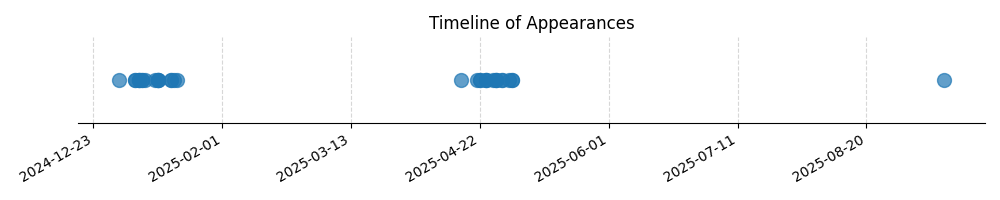

Kategorie: Meteorologie
Stabilní teplotní zvrstvení v kombinaci se silným větrem, který se s výškou zesiluje, může způsobit vznik atmosférických vln za terénní překážkou. Tyto vlny se projevují jako periodické pohyby vzduchu nahoru a dolů, které mohou vést k turbulentnímu proudění, ale primárním jevem jsou právě vlnové jevy.

| Datum výskytu |
|---|
| 2025-09-13 |
| 2025-05-02 |
| 2025-05-02 |
| 2025-05-01 |
| 2025-04-29 |
| 2025-04-29 |
| 2025-04-27 |
| 2025-04-27 |
| 2025-04-27 |
| 2025-04-26 |
| 2025-04-24 |
| 2025-04-24 |
| 2025-04-24 |
| 2025-04-22 |
| 2025-04-22 |
| 2025-04-21 |
| 2025-04-16 |
| 2025-01-18 |
| 2025-01-17 |
| 2025-01-16 |
| 2025-01-16 |
| 2025-01-12 |
| 2025-01-12 |
| 2025-01-12 |
| 2025-01-12 |
| 2025-01-11 |
| 2025-01-08 |
| 2025-01-07 |
| 2025-01-07 |
| 2025-01-06 |
| 2025-01-06 |
| 2025-01-06 |
| 2025-01-05 |
| 2025-01-05 |
| 2024-12-31 |